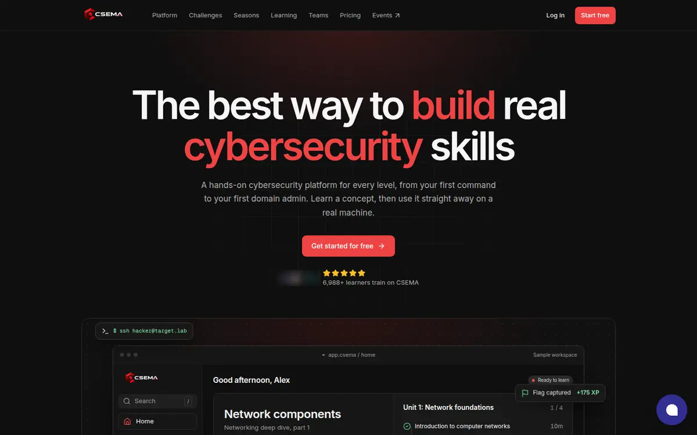
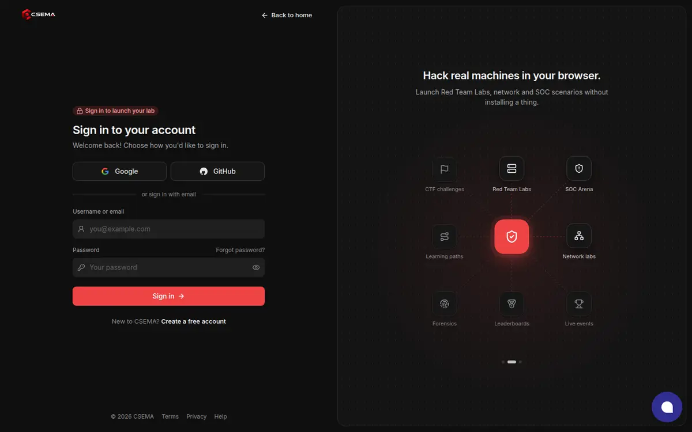
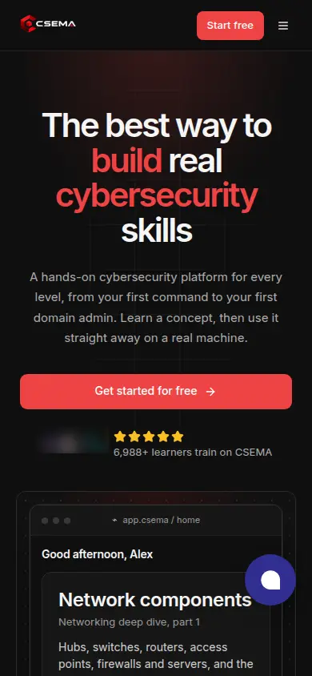

CSEMA landing page teardown
CSEMA is a hands-on cybersecurity training platform. Its homepage has one job. It must turn a visitor into a free account. This teardown finds what stops that. Each finding has evidence and a fix. At the end, there is a proposed layout and a working demo of it.
Method: I took screenshots at 1440 px (desktop) and 390 px (phone) width. I followed every button with a logged-out browser. I compared the numbers on the homepage with the numbers on the sign-up, pricing and challenges pages. I calculated text contrast with the WCAG formula.
What is fundamentally wrong: the page is a product catalogue, not a path to a first win.
The page lists every product area with equal weight: paths, scenarios, challenges, SOC, network labs, AI robotics and the attack box. Each area gets the same red button. The visitor must decide alone where to start. The strongest reasons to sign up are hidden: no card is needed, 5 free machine hours, one-click Google or GitHub sign-up, and labs built on real CVEs. The red accent is on almost everything, so the real call to action does not stand out.

Findings, most damaging first
Eight buttons look the same and go to five places
The homepage has eight filled red buttons. They have the same color, size and arrow. A visitor cannot know which one is the main action. Two of them send a new visitor to a sign-in page. The Zero Hour campaign page also asks a new visitor to "Log In to Start".
| Button text | Goes to | What a new visitor sees |
|---|---|---|
| Start free (nav) | /register | Sign-up form |
| Get started for free (hero) | /register | Sign-up form |
| Start practicing | /register | Sign-up form |
| Start a path now | /learning | Catalogue page |
| Start a challenge now | /challenges | Catalogue page |
| Start a scenario now | /dashboard/red-team-labs | "Sign in to your account. Welcome back!" |
| SOC Arena (card) | /dashboard/soc | "Sign in to your account. Welcome back!" |
| Start your attack box | /register | Sign-up form |
| Get started for free (footer) | /register | Sign-up form |
| Zero Hour (text link) → "Log In to Start" | /campaigns/zero-hour | A button that asks a new visitor to log in |

- Effect
- A visitor who clicks the scenario button expects a lab. They get a login form for an account they do not have. Many will leave.
- Fix
- Use one filled red button style, and send it to sign-up only. Make every other action an outline button or a text link. If a link needs an account, send the visitor to
/register?redirect=…, not to/login.
Red is everywhere, so the call to action does not stand out
An accent color works because it is rare. On this page, red is in the hero headline, in the second line of six section headings, on eight buttons and on many icons. Other colors also compete: yellow stars, green progress rings, blue and violet icon tiles, and an indigo chat bubble.
- Effect
- The eye has no single target. The sign-up button has the same visual weight as the words "your expertise" and "good questions".
- Fix
- Make the page monochrome: black, white and a gray scale. Use red for two jobs only: the primary action, and the "Live" state of a season. Set headings in white, not red.
The hero shows the least exciting moment of the product
The headline says "The best way to build real cybersecurity skills". Any competitor can say that. The visual below it is a learning dashboard: "Good afternoon, Alex", a lesson list and weekly goals. It looks like a course site.
The moment that makes CSEMA different is lower on the page, in section seven. That moment is a terminal in the browser, a live target machine and a captured flag.
- Effect
- The first screen does not show why this is better than a video course.
- Fix
- Lead with the concrete promise: "Hack real machines in your browser." The sign-up page already uses this line. Show the terminal and a captured flag in the hero.
The best reasons to sign up are hidden
Other pages of the site state strong facts. The homepage does not show them near the main button.
| Fact | Where it is today |
|---|---|
| Free plan is ₹0, no card needed | Pricing page, sign-up page |
| 5 machine hours every month, free | Small gray text next to button 8, and in the FAQ |
| One-click sign-up with Google or GitHub | Sign-up page only |
| Labs built on real CVEs (TeamCity, Jenkins, Check Point, Apache Struts) | Challenges page only |
| Nothing to install | FAQ, item 3 |
- Effect
- "Start free" asks for trust but does not say what the visitor gets. Fear of a hidden cost or a long setup stays.
- Fix
- Put a short line under the main button: "₹0 · No card · 5 lab hours every month · Runs in your browser". Show the Google and GitHub buttons in the hero.
The numbers disagree, and one number hurts
The site gives four different challenge counts:
| Page | Claim |
|---|---|
| Homepage stats | 385 hands-on challenges |
| Sign-up page | 350+ free challenges |
| Challenges page tab | Challenges 231 · Labs 25 |
| Pricing, free plan | 118 free challenges |
The counts may use different definitions. A visitor cannot know that. The sign-up page says "350+ free challenges", but the pricing page says 118 are free. That looks like an exaggeration.
The homepage also shows "31 flags captured this week" next to "6,988 registered learners". Read together, this suggests a low level of activity. The five yellow stars have no source.
- Effect
- Security learners are skeptical by trade. Inconsistent numbers reduce trust in every other claim.
- Fix
- Use one source for each count, with one definition. Remove the weekly flag count, or replace it with a larger time window. Remove the stars, or link them to a real review source.
One template, repeated six times, for one audience
Six sections use the same pattern: a heading with a red second line, two paragraphs, a mockup and a red button. The sections alternate left and right. The page does not tell a story. It does not ask "Who are you?".
CSEMA has at least three audiences: complete beginners, practitioners who want hands-on practice, and teams or universities. Beginners find reassurance only in the FAQ. Teams find only one FAQ answer and an outline button.
- Effect
- The visitor must map the product menu to their own need. Many visitors will not do this work.
- Fix
- Replace the five feature sections with one "Pick your starting point" block. It has three choices, one per audience. Add a separate band for teams.
Too many exits, and a widget that covers content
The top bar has seven links. One of them, "Events", opens a different domain. On a phone, the indigo chat bubble covers the product mockup and part of the text.

- Effect
- Each extra link is a way to leave before sign-up. The chat bubble adds a seventh color and blocks the page.
- Fix
- Keep four links: Learn, Practice, Teams, Pricing. Move Events to the footer. Make the chat bubble monochrome. On a phone, show it only after the visitor scrolls past the hero.
The sign-up form asks for more than it needs
The email sign-up form has four fields: username, email, password and confirm password. Then it sends a code to verify the email.
- Fix
- Remove "Confirm password". The eye icon already lets the user check the password. Ask for the username after the first lab, not before. Put Google and GitHub first, as they are now.
White text on the red buttons fails the contrast minimum
The buttons use #EF4444 with white text. The contrast ratio is 3.76:1. WCAG AA needs 4.5:1 for text of this size.
- Fix
- Use
#DC2626(4.83:1) for the button fill and#B91C1C(6.47:1) for hover. The red stays the same family.
Before and after: page structure
The left column is the current page, top to bottom. The right column is the proposed page. A filled dot is a filled red button. A ring is an outline button or a text link.
Proposed layout
Each section has one job. The filled red button always goes to sign-up. It says the same words every time.
- Top bar. Logo, four links, "Log in" as text, "Start free" as the only filled button. It stays on screen when the visitor scrolls.
- Hero. Centered and minimal. A small "Live · Season 1: Zero Hour" link gives a reason to start today. Headline: "Hack real machines. Right in your browser." One sub-line. Main button "Start free". Variant B replaces it with Google and GitHub buttons. One reassurance line: "₹0, no card. 5 lab hours every month." Below: a live terminal with a task panel. The tasks tick as the session runs, and it ends with "Flag captured +175 XP".
- Proof strip. Four facts with one definition each, for example registered learners, challenges, learning paths and free machine hours.
- How it works. Three steps: learn the idea, use it on a real machine, prove it with XP and a certificate.
- Pick your starting point. Three cards: "I am new", "I want practice", "I want a real incident". Each card has an outline button.
- Attack box demo. The product moment at full width, with the real CVE lab names. Filled button: "Start free".
- Season. Operation Zero Hour: 24 missions, five chapters, one leaderboard.
- Free plan, and teams. What the ₹0 plan includes, next to an outline "Talk to our team" block for universities.
- FAQ. The four current questions. They answer the main fears.
- Final band. One line, one filled button.
How to measure the change
This teardown predicts the direction of the change, not its size. Do not trust a number until you measure it. The site already loads Google Analytics 4 and a first-party tracking script, so you can track these events now.
| Metric | Definition | Why |
|---|---|---|
| Primary | Homepage visitors who open /register, divided by all homepage visitors | This is the click rate the redesign targets |
| Primary | Accounts created within 24 hours, divided by homepage visitors | A click is only useful if it becomes an account |
| Guardrail | New accounts that start a machine in their first session | Checks that the new copy does not attract the wrong visitors |
| Diagnostic | Clicks per button, by position (hero, demo, free plan, final band) | Shows which position does the work |
| Diagnostic | Visits to /login from homepage links, by new visitors | Must drop to zero after fix 1 |
Ship in this order. Each step is cheap and has a clear test:
- Fix the two login-wall links and the button contrast. These are bugs, not experiments.
- Make the page monochrome with one button style. Run it against the current page as an A/B test.
- Test the hero. Variant A: one "Start free" button. Variant B: Google and GitHub buttons in the hero.
- Replace the feature sections with the three-choice block.
Limits. I checked the site on one day, logged out, from one location (prices showed for Kolkata). I had no access to analytics, so this teardown has no traffic or conversion data. The counts in finding 5 may have reasons that are not visible from outside.
Sources
- Homepage, sign-up page, pricing page, challenges page. Checked 17 October 2026.
- WCAG 2.2, Understanding SC 1.4.3 Contrast (Minimum).